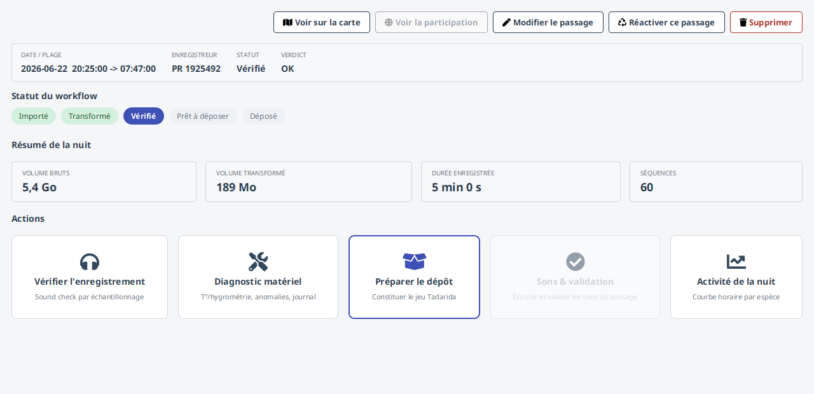
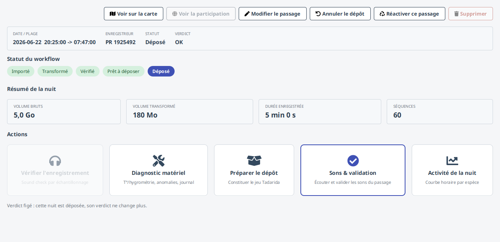
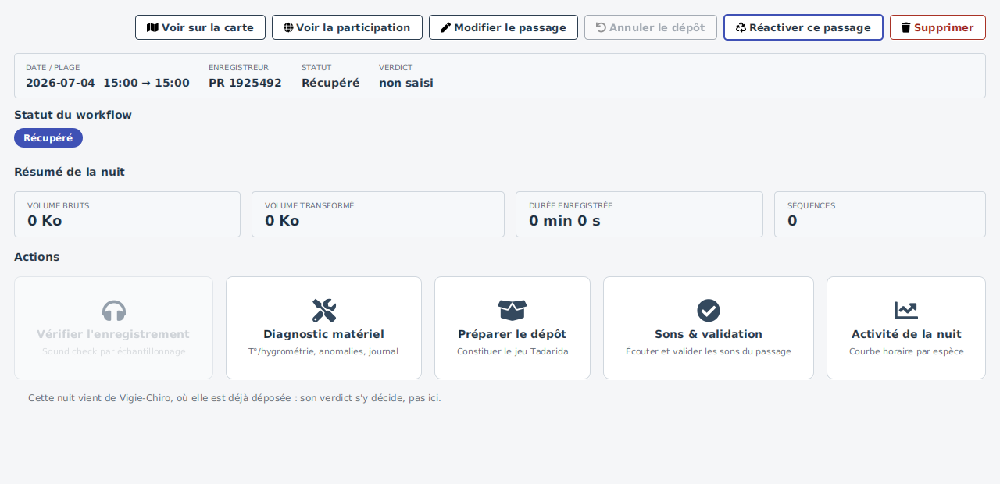
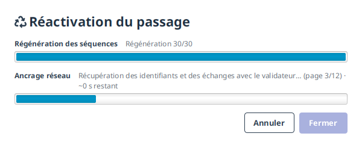
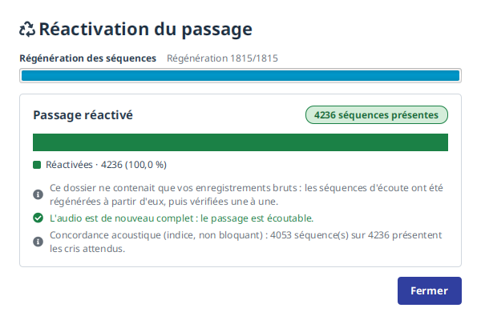
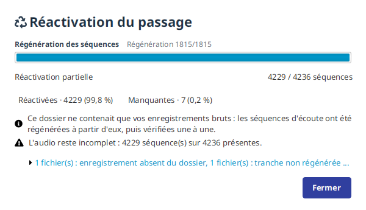
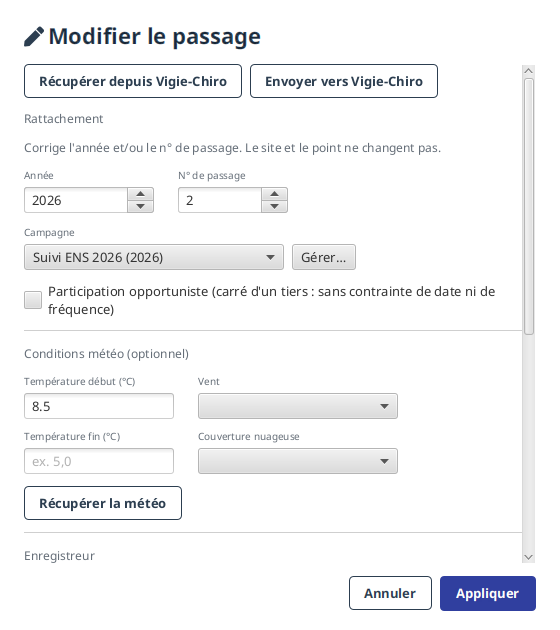
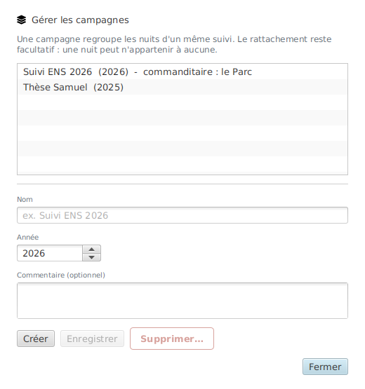
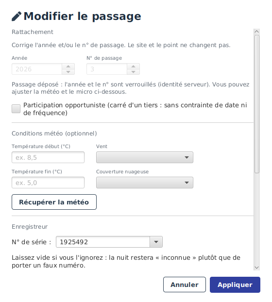
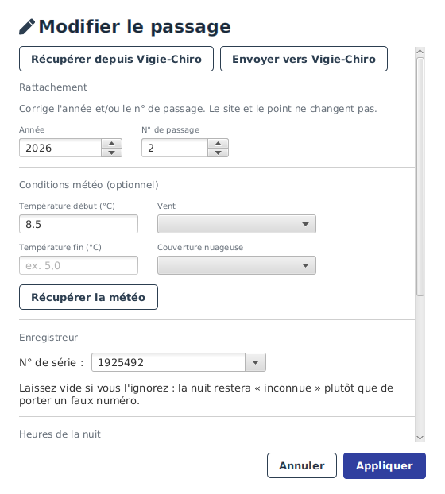

Passage¶
L'écran Passage est le pivot d'une nuit donnée : il rassemble en une seule page tout ce qui concerne cette nuit et ouvre les écrans spécialisés (vérification, dépôt, validation, diagnostic). C'est l'écran sur lequel vous revenez entre chaque étape du parcours.
Anatomie de l'écran¶

De haut en bas :
- En-tête : l'identifiant de la nuit (carré / point / numéro / année) et les actions sur le passage (Modifier le passage, Supprimer). Le bouton Voir la participation ouvre la participation liée sur le portail Vigie-Chiro dans votre navigateur, pour vérifier d'un coup d'œil que la nuit est rattachée au bon endroit ; il reste grisé tant que le passage n'est pas lié (la participation est créée à l'import connecté, ou au premier dépôt).
- Bandeau d'identité : date et plage horaire, enregistreur, statut et verdict.
- Statut du workflow : une frise qui situe la nuit dans sa progression (Importé, Transformé, Vérifié, Prêt à déposer, Dépôt en cours, Déposé). Une nuit récupérée de Vigie-Chiro n'a pas de frise : elle n'a parcouru aucune de ces étapes, elle est arrivée toute faite de la plateforme. Son bandeau porte simplement « Récupéré ».
- Résumé de la nuit : volumes (bruts et transformés), durée enregistrée, nombre de séquences.
- Cartes d'actions : Vérifier l'enregistrement, Diagnostic matériel, Préparer le dépôt, Sons & validation et Activité de la nuit. Une seule carte est mise en avant : la prochaine action recommandée.
Le déverrouillage de la validation¶
La carte Sons & validation est grisée tant que la nuit n'est pas déposée (voir la capture ci-dessus, au statut « Vérifié »). Une fois la nuit déposée, elle se déverrouille :

Pourquoi cet ordre ?
Vigie-Chiro ne renvoie les résultats Tadarida que 24 à 48 h après le dépôt : la validation des espèces vient donc nécessairement après le dépôt. Voir le parcours métier.
Les sons non identifiés¶
Tadarida ne retient qu'une partie des enregistrements d'une nuit : les autres (bruit, sons trop faibles, séquences non classées) existent sur le disque mais sans identification Tadarida. L'écran Sons & validation d'un passage les affiche désormais avec les observations Tadarida ; une vue dédiée Sons non identifiés (onglet au-dessus de la table) permet de n'afficher que ces séquences‑là. Vous pouvez les écouter pour vérifier par vous‑même s'il s'y cache une chauve‑souris que l'algorithme aurait manquée. Leur colonne d'espèce affiche « — » (aucune proposition).
Valider à la main. Si vous reconnaissez une espèce, sélectionnez la séquence, choisissez le taxon dans la liste puis cliquez sur Corriger : une observation est créée pour cette séquence, qui passe alors au statut Corrigée avec votre taxon. La séquence reste dans la liste (vous voyez ce qui a déjà été traité) et l'observation rejoint le reste de vos données. Le bouton Valider : qui « retient la proposition Tadarida » : reste inactif ici, faute de proposition à retenir.
Annuler le dépôt¶
Sur un passage déposé, un bouton Annuler le dépôt (barre du haut, visible sur la capture ci-dessus) permet de revenir en arrière : après confirmation, la nuit repasse du statut « Déposé » à « Prêt à déposer ». Les validations Tadarida déjà saisies sont conservées : annuler le dépôt ne touche pas votre travail de validation, il rouvre seulement l'étape de dépôt (par exemple pour corriger quelque chose avant de redéposer). Le bouton n'apparaît que lorsqu'il a un sens, c'est-à-dire sur un passage effectivement déposé.
Sur une nuit récupérée de Vigie-Chiro, en revanche, le bouton est là mais désactivé : il n'y a pas de dépôt à annuler ici. C'est la plateforme qui détient cette nuit, et aucun geste pris sur votre machine ne le change. Le bouton reste visible plutôt que de disparaître, parce que la nuit est bien déposée là-bas : son absence pure et simple vous laisserait chercher. Le survoler explique la situation et indique le bon geste, Supprimer, décrit juste en dessous.
(Ce n'est pas qu'une question de vocabulaire : annuler ce dépôt ramènerait la nuit en « Prêt à déposer », c'est-à-dire prête à être envoyée une seconde fois sur Vigie-Chiro, où elle est déjà.)
Supprimer une nuit venue de Vigie-Chiro¶
Une nuit déposée ne se supprime pas : c'est une donnée officielle que vous avez transmise à la plateforme, l'application refuse de la détruire depuis l'écran.
Une nuit récupérée de Vigie-Chiro porte, elle, son propre statut : « Récupéré », sur fond violet. Elle est bien sur la plateforme - la participation existe là-bas - mais ce n'est pas vous qui l'y avez mise : la synchronisation vous l'a rapportée. La supprimer enlève une copie locale, rien de plus. La participation reste où elle est, et une prochaine synchronisation la rapatriera si vous la voulez de nouveau.
Pourquoi un statut à part
Jusqu'à récemment ces nuits portaient « Déposé », ce qui était exact et trompeur à la fois : elles héritaient alors de toutes les protections d'une nuit que vous aviez déposée, y compris celles qui n'avaient aucun sens pour elles. Un statut distinct laisse chaque règle décider séparément - et c'est ainsi que Supprimer s'est ouvert pendant que Vérifier restait fermé.
Supprimer est donc actif sur ces nuits-là. Auparavant, le seul recours était Annuler le dépôt puis Supprimer : un détour qui vous faisait affirmer quelque chose de faux - la nuit est déposée, et aucun geste pris ici ne le change - pour obtenir le droit de nettoyer votre base.
La vérification, elle, reste fermée sur ces nuits, et pour une bonne raison : leur verdict se décide sur Vigie-Chiro, où elles vivent. Le motif affiché le dit, au lieu de vous annoncer que vous avez déposé une nuit que vous n'avez jamais déposée.
Le renommage (année et n° de passage) reste verrouillé lui aussi : ces valeurs sont l'identité que le serveur donne à la nuit. Et Sons & validation reste ouvert : les observations sont là, vous pouvez les écouter et les valider dès maintenant, sans attendre que l'audio revienne.
Supprimer un passage n'efface pas vos enregistrements¶
Supprimer retire la nuit de votre base : le passage, ses séquences, ses relevés, et - c'est le point grave que la fenêtre de confirmation vous rappelle - vos validations, que rien ne régénère.
Vos fichiers audio, eux, restent sur le disque. C'est délibéré : ils sont ce que l'application ne sait pas reconstituer. La confirmation vous indique où ils se trouvent, pour que vous puissiez les retrouver, les archiver, ou réimporter la nuit plus tard à partir d'eux.
Quand vous n'en voulez vraiment plus, l'audit de cohérence les liste sous « Dossier sans session » et propose de les retirer, en chiffrant d'abord la place que vous regagnerez.
Le volume des bruts¶
Le Résumé de la nuit affiche le volume des bruts : la copie des enregistrements d'origine, si l'import l'a conservée. Ces fichiers ne servent pas à l'écoute ni à la validation (celles-ci s'appuient sur les séquences transformées) et peuvent être volumineux.
L'application ne les supprime pas pour vous : si vous voulez récupérer cet espace, effacez le
sous-dossier bruts/ de la nuit avec votre gestionnaire de fichiers. Rien ne sera perdu de votre
travail, et l'audit ne s'en alarmera pas - il sait que ces copies sont optionnelles.
Quand l'audio n'est plus là¶
L'application ne supprime jamais vos fichiers : vous en gardez la maîtrise. Si vous déplacez, rangez ou effacez l'audio d'une nuit, le passage cesse simplement d'être écoutable - il reste consultable.
Ce qui fait l'intérêt de la nuit ne bouge pas :
- les observations et vos validations (taxons corrigés, références, commentaires, marquages « douteux ») ;
- les résultats Tadarida (le CSV), le journal du capteur et le relevé climatique ;
- l'historique du passage : vous voyez toujours vos nuits, même sans en avoir gardé l'audio.
Dans Sons & validation, un bandeau l'annonce et le lecteur audio est remplacé par une explication. Tout le reste continue de fonctionner : la liste des observations, les filtres, le tri, les colonnes, les vues mémorisées, les commentaires, le marquage « douteux », les corrections et les exports. Vous ne pouvez simplement plus écouter.
L'audit de cohérence ne s'en alarme pas : un audio absent est un état, pas une corruption. Il apparaît en simple information, avec le décompte des séquences encore présentes.
La plateforme ne vous rendra pas l'audio d'un dépôt ZIP
Pour réécouter, il faut vos fichiers. La plateforme Vigie-Chiro ne rend pas l'audio d'un dépôt au format ZIP (le mode par défaut) : le serveur n'en conserve pas de copie téléchargeable. Gardez donc une sauvegarde de ce à quoi vous tenez.
Réactiver un passage : réimporter les fichiers d'origine¶
Le bouton Réactiver ce passage remet l'audio en place à partir d'un dossier que vous désignez (votre sauvegarde, un disque externe, la carte d'origine…). L'exploration est récursive : vous pouvez pointer la racine d'une sauvegarde.
Il est actif sur une nuit récupérée de Vigie-Chiro, qui n'a jamais eu d'audio sur cette machine : c'est même le cas qu'il sert le plus. Sa fiche est alors presque vide - aucun volume, aucune séquence - et c'est normal : le son n'est nulle part ailleurs que sur votre carte SD.

Copier, ou laisser vos fichiers où ils sont¶
L'application demande ce qu'elle doit faire de vos fichiers - mais seulement quand la question a un objet, c'est-à-dire quand votre dossier contient des séquences déjà transformées qu'elle peut reposer telles quelles. Elle apparaît alors dans la fenêtre de réactivation, à la place des barres, et la procédure reprend dès que vous avez répondu.
Sur une carte qui ne contient que vos enregistrements bruts, aucune question ne vous est posée : il n'y a rien à laisser en place, puisque les séquences sont recalculées et écrites dans votre dossier de travail.
La formulation dépend de l'endroit que vous avez choisi :
- hors de votre dossier de travail - un serveur de fichiers, un disque externe, votre arborescence habituelle : ces fichiers sont les vôtres, et en faire une copie créerait un doublon que vous n'avez pas demandé. L'application propose donc de les laisser où ils sont et de s'y référer ;
- une sauvegarde ponctuelle dont vous ne voulez pas dépendre : choisissez En faire une copie, et l'application en garde la sienne, comme elle l'a toujours fait.
Laisser les fichiers sur place a une conséquence, et elle vous est dite avant le choix, pas découverte après : cette nuit n'est plus écoutable tant que ce support n'est pas accessible - disque débranché, dossier réseau hors ligne. Elle le redevient d'elle-même dès qu'il revient, sans qu'il faille rien réactiver une seconde fois.
Ce choix ne concerne que les fichiers que vous désignez. Les séquences que l'application régénère elle-même à partir de vos enregistrements bruts sont, elles, toujours écrites dans votre dossier de travail : elles n'existaient nulle part ailleurs, il n'y a donc rien à référencer - et c'est pour cela que la question ne vous est pas posée dans ce cas.
Chaque fichier est vérifié avant d'être rebranché. C'est le cœur de l'affaire : deux jeux de fichiers peuvent porter les mêmes noms sans être les mêmes (une redécoupe, une autre expansion, une autre nuit du même carré). Rebrancher vos observations sur le mauvais audio produirait un résultat faux et silencieux : vous valideriez un cri en écoutant autre chose. L'application confronte donc chaque fichier à ce qu'elle sait de la séquence attendue :
- son empreinte de contenu, si elle a été enregistrée à l'import (identité certaine) ;
- sinon son nom, sa taille et sa durée réelle, confrontés à l'en-tête du fichier ;
- et les cris eux-mêmes : les instants et fréquences des observations sont-ils bien présents dans le fichier proposé ?
Un fichier qui échoue à ces contrôles n'est jamais rebranché en silence : il est rapporté, avec le motif du refus, et c'est vous qui décidez de la suite.
Le rapport final dit combien de séquences sont revenues (et sur quelle preuve), combien ont été refusées (et pourquoi), et combien restent introuvables dans le dossier désigné. Si tout est revenu, le passage redevient pleinement écoutable ; s'il en manque, il reste partiellement disponible, et le décompte vous le dit.
Ce qui manque est nommé, avec la raison :
• PaRecPR1997632_20260703_223507.wav : enregistrement absent du dossier (7 séquences)
• PaRecPR1997632_20260703_212006_001.wav : tranche non régénérée depuis son enregistrement
La distinction compte. « Enregistrement absent du dossier » veut dire que la copie que vous avez désignée est incomplète : cherchez le fichier ailleurs, sur une autre sauvegarde ou sur la carte d'origine. « Tranche non régénérée » veut dire que le fichier était bien là mais que l'application n'a pas su en reproduire cette séquence : c'est un défaut de notre côté, à signaler.
La modale en détaille les premières et résume le reste, pour rester lisible. La commande
vigiechiro reactiver en donne la liste complète, si vous avez besoin de tout voir.
Suivre l'avancement¶
Une réactivation peut durer plusieurs minutes sur une grosse nuit : elle relit des milliers de fichiers. La fenêtre dit où elle en est, et chaque étape porte son nom :
| Ce qui s'affiche | Ce qui se passe |
|---|---|
| Régénération des séquences | vos enregistrements sont relus et redécoupés, séquence par séquence |
| Enregistrement des fichiers retrouvés… | ce que l'application vient de retrouver est inscrit dans sa base |
| Vérification de l'audio disponible… | elle recompte ce qui est désormais écoutable |
| Recherche de ce qu'il reste à récupérer… | elle établit s'il faut encore interroger Vigie-Chiro |
| Ancrage réseau | les identifiants et les échanges avec le validateur sont rapatriés, page par page |

Les deux étapes en gras ont leur propre barre, parce qu'on peut en mesurer l'avancement ; les autres défilent sur le libellé de l'étape en cours. Aucun moment ne reste muet : si la fenêtre n'affiche rien de nouveau pendant longtemps, c'est un défaut, et cela vaut la peine de le signaler.
Annuler interrompt proprement à l'étape suivante : rien n'est défait, puisque la réactivation ajoute de l'audio sans jamais en retirer. L'arrêt est honoré même pendant une nouvelle tentative réseau : quand la plateforme demande d'attendre avant de réessayer, votre clic n'attend pas la fin de ce délai. Fermer n'est disponible qu'une fois l'opération terminée : survolez le bouton pour savoir pourquoi il attend.
Les fichiers que vous désignez ne sont jamais touchés
Que vous ayez demandé la copie ou la référence, votre dossier source reste intact : rien n'y est déplacé, renommé ni supprimé. Vos observations et vos validations ne sont pas davantage recalculées : on rebranche des chemins, rien d'autre.
Un passage reconstruit depuis Vigie-Chiro
Si ce passage avait été reconstruit (récupéré depuis la plateforme sans que vous ayez conservé l'audio localement), la réactivation fait une chose de plus : elle rétablit le lien entre vos observations et la plateforme, pour que vous puissiez de nouveau publier vos corrections. C'est le bon moment, et le seul utile : puisque vous venez de retrouver l'audio, vous allez pouvoir écouter, corriger, puis renvoyer. Cette étape interroge la plateforme, elle peut donc prendre un moment : et n'a lieu que pour ces passages-là (un passage importé normalement garde ce lien depuis le départ).
Elle ramène au passage les échanges avec le validateur du Muséum, s'il y en a : les deux voyagent ensemble. Le compte rendu de la réactivation vous dit alors sur combien d'observations le validateur s'est exprimé, plutôt que de vous laisser le découvrir en ouvrant la bonne ligne par hasard.
Vous n'avez gardé que vos enregistrements bruts ?¶
C'est le cas le plus fréquent : on garde volontiers sa carte SD (ou sa copie), plus rarement les séquences d'écoute, qui n'en sont qu'un produit dérivé.
Désignez ce dossier-là, tout simplement. L'application reconnaît ce qu'il contient : si elle n'y trouve pas les séquences, mais qu'elle y trouve vos bruts, elle régénère les séquences à partir d'eux. Vous n'avez aucun choix à faire ni aucune option à cocher.
Ce qui est régénéré n'est pas cru sur parole : chaque tranche recalculée passe exactement les mêmes contrôles que si vous l'aviez retrouvée telle quelle. C'est possible parce que le découpage est reproductible : à partir du même enregistrement, l'application refabrique des tranches identiques au bit près, dont l'empreinte correspond alors à celle qui avait été relevée avant l'archivage. Autrement dit, la reproductibilité sert de preuve, elle n'est pas une excuse pour ne pas vérifier.
Le brut lui-même est d'abord vérifié (empreinte du fichier entier). Un brut douteux ne régénère rien : il serait absurde de recalculer des séquences à partir d'un fichier dont l'identité n'est pas établie.
Un passage reconstruit n'avait, lui, aucune empreinte
Ce qui précède vaut pour un passage que vous aviez importé puis archivé : ses empreintes avaient été relevées avant l'archivage. Un passage reconstruit (récupéré depuis Vigie-Chiro sans que l'audio soit jamais passé par cette machine) n'en a aucune, ni sur ses séquences, ni sur ses bruts. La réactivation depuis les bruts fonctionne pourtant : c'est même le seul moyen de récupérer son audio, mais elle s'appuie sur ce dont elle dispose : les tranches régénérées sont un extrait fidèle de votre brut désigné (le découpage recopie le son sans le retoucher), et l'application vérifie qu'elles portent le bon nom et la bonne durée. Elle mesure en plus, à titre indicatif, la part des cris attendus qu'elle retrouve dans l'audio (« Concordance acoustique »), sans en faire un couperet : sur des cris réels faibles, une mesure automatique se trompe plus facilement qu'elle ne rassure, et refuser sur cette base écarterait le bon son.
Ce que la réactivation vous rend à la fin¶
Quand elle a terminé, la fenêtre affiche un compte rendu qui répond d'abord à la seule question qui compte : le passage est-il de nouveau écoutable ? La pastille chiffre les séquences présentes, et la barre en montre la part.

Quand il manque des séquences, la barre le montre plutôt que de le dire, et le pied résume pourquoi :

Les motifs se déplient d'un clic, et chacun ouvre la liste des fichiers concernés : les plus coûteux d'abord, puisque c'est par eux qu'on commence à chercher. Deux situations y sont distinguées, parce qu'elles n'appellent pas la même suite :
- un enregistrement absent du dossier : vous pouvez le retrouver et relancer ;
- une tranche non régénérée : le brut était là, la tranche n'a pas pu en sortir.
Un fichier qui portait le bon nom sans être le bon audio forme son propre motif. Il n'est jamais rebranché en silence : vos observations pointeraient alors sur un autre son que celui qu'elles décrivent.
Vos bruts ne sont pas recopiés sur le disque
Ils servent à recalculer les séquences, puis l'application les oublie. Recopier les gigaoctets que vous aviez justement demandé de libérer n'aurait aucun sens : le passage redevient écoutable, sans que ses bruts reviennent occuper la place.
Modifier le passage¶
Le bouton Modifier le passage ouvre une fenêtre pour corriger le rattachement (année, numéro de passage, si une nuit a été rattachée par erreur), saisir les conditions de dépôt (relevé météo, matériel du micro) et renseigner l'enregistreur.

Sur un passage déjà déposé, l'année et le numéro sont verrouillés (ils forment l'identité de la nuit côté Vigie-Chiro), mais la météo et le micro restent modifiables. C'est utile, par exemple, pour compléter à la main la météo d'un passage reconstruit que la plateforme n'a pas rapatriée.
Rattacher à une campagne¶
Une campagne regroupe les nuits qui relèvent d'un même suivi (« Suivi ENS 2026 », « Convention carrière »…). Le rattachement est facultatif : une nuit sans campagne reste une nuit normale.
La liste Campagne propose les campagnes existantes, avec « (aucune campagne) » en tête pour détacher. Le choix est enregistré à Appliquer, indépendamment du renommage : on peut donc rattacher ou détacher une nuit déjà déposée, dont l'année et le numéro sont pourtant verrouillés.
Le regroupement se retrouve ensuite dans Carte & passages (colonne, tri et filtre) et dans Ma saison (filtre).
Le bouton Gérer…, à côté de la liste, ouvre la fenêtre où l'on crée, renomme et supprime les campagnes. C'est de là que vient la première : tant qu'aucune n'existe, la liste ne propose rien.

Le formulaire sert aux deux usages. Vide, il crée. Une campagne sélectionnée dans la liste, il la reflète et Enregistrer applique vos changements. Enregistrer et Supprimer restent grisés tant qu'aucune campagne n'est choisie.
Supprimer une campagne n'efface aucune nuit
La confirmation annonce combien de passages y étaient rattachés. Ils sont détachés, pas supprimés : ils restent dans vos données, simplement sans campagne. C'est pourquoi la question pose le chiffre avant d'agir, et non après.
À la fermeture de cette fenêtre, la liste déroulante se met à jour : une campagne créée à l'instant y est immédiatement proposée, et le choix que vous aviez déjà fait n'est pas perdu.
Les mêmes gestes restent disponibles en ligne de commande (creer-campagne, modifier-campagne,
supprimer-campagne).
Participation opportuniste¶
Une participation opportuniste est une nuit réalisée sur le carré d'un autre observateur. Elle est identique en données à une nuit ordinaire, mais elle ne relève pas du protocole Point Fixe : elle est donc exemptée de la fenêtre calendaire (R3) et de l'intervalle conseillé entre deux passages (R4). Aucune alerte ne vous sera faite sur ses dates.
La case Participation opportuniste permet de le déclarer. Elle sert surtout aux participations non connectées, celles que l'application ne peut pas rapprocher d'un site Vigie-Chiro.
Trois chemins mènent au même résultat :
- la case à l'import, pour déclarer la nuit dès son arrivée ;
- la case de cette fenêtre, pour le corriger après coup ;
- automatiquement, à la synchronisation : si la plateforme dit que le carré appartient à quelqu'un d'autre, ses nuits sont marquées sans que vous ayez à y penser.
L'automatique n'efface jamais votre choix
La synchronisation ajoute des marquages, elle n'en retire aucun. Une case que vous avez cochée à la main survit à toutes les synchronisations suivantes : y compris sur une participation que la plateforme ne connaît pas.
Conséquence sur le suivi : une nuit opportuniste ne compte pas dans les deux passages attendus du point, et n'engendre aucun « reste à faire » dans Ma saison.
Renseigner l'enregistreur¶
Le champ Enregistreur porte le numéro de série du Passive Recorder qui a produit la nuit. Normalement, l'application le lit dans les noms de fichiers de la carte SD à l'import. Quand elle n'y parvient pas, la nuit affiche « PR INCONNU » : et jusqu'ici, rien ne permettait de le corriger.
Le champ est une liste modifiable : vous pouvez saisir le numéro librement, ou en choisir un parmi
les propositions. Celles-ci viennent d'abord des noms de fichiers de cette nuit (le journal
LogPR…, puis les enregistrements PaRecPR…), puis des enregistreurs déjà connus de votre poste.
Le premier cas est le plus fréquent : l'information était bien là, dans les noms de fichiers, mais
l'import ne l'avait pas retenue.
Un enregistreur ne peut pas être vidé
Une nuit est toujours rattachée à un enregistreur. Vous pouvez corriger le numéro, pas le supprimer, et « INCONNU » n'est pas une saisie acceptée : c'est ce que l'application affiche quand elle ne sait pas, pas une valeur que l'on choisit.
Corriger les heures de la nuit¶
Le bloc Heures de la nuit affiche le début et la fin de la nuit. Il se comporte de deux façons, selon ce que l'application sait :
| Situation | Comportement |
|---|---|
| La nuit a des fichiers ou des sons | Les champs sont grisés : ce sont les enregistrements qui font foi, et l'application réaligne les heures dessus toute seule. |
| La nuit n'a ni l'un ni l'autre (récupérée de Vigie-Chiro, jamais reconstruite) | Les champs sont modifiables : rien ne peut attester ses heures, c'est à vous de les corriger. |
Dans le premier cas, l'application peut être amenée à corriger les heures d'elle-même : si les enregistrements contredisent ce qui est déclaré, ce sont eux qui partent vers Vigie-Chiro. Elle ne le fait pas en silence : après l'envoi, le message indique l'ancienne et la nouvelle valeur, afin que vous puissiez la contester si elle vous paraît fausse.
Dans le second, rien ne se corrige tout seul, faute de quoi s'appuyer : c'est vous qui savez.

Une fin avant le début, c'est normal
Une nuit franchit minuit : 21:00 → 06:00 est la forme habituelle, et l'application la comprend.
En revanche une fin identique au début est refusée - elle ne délimiterait aucune nuit, et la
plateforme l'enregistrerait comme une nuit de 24 heures.
Récupérer et envoyer¶
Deux boutons, deux sens :
| Bouton | Ce qu'il fait |
|---|---|
| Récupérer depuis Vigie-Chiro | lit sur la plateforme la météo, le micro et l'enregistreur de cette nuit, et remplit le formulaire |
| Envoyer vers Vigie-Chiro | pousse vers la plateforme ce que vous venez de saisir |

Récupérer sert quand la nuit a été préparée sur le site web : inutile de ressaisir ce qui existe déjà. Envoyer fait l'inverse, et vous dit s'il a réussi : en cas d'échec (hors connexion, refus du serveur), le message le dit et la fenêtre reste ouverte pour que vous puissiez réessayer sans perdre votre saisie.
Ces deux boutons n'apparaissent que si vous êtes connecté à Vigie-Chiro : hors connexion, la fenêtre reste utilisable pour tout le reste, elle ne propose simplement pas d'échange.
Vérifier sur la plateforme
Après un envoi, le bouton Voir la participation (barre du haut de l'écran du passage) ouvre la fiche dans votre navigateur : c'est le moyen le plus sûr de confirmer que la plateforme affiche bien ce que vous attendiez.
En ligne de commande¶
Les mêmes gestes existent en ligne de commande, sous les mêmes mots :
./vigiechiro metadonnees-passage --passage 12 --recuperer
./vigiechiro metadonnees-passage --passage 12 --enregistreur 1925492
./vigiechiro metadonnees-passage --passage 12 --heure-debut 21:00 --heure-fin 06:00 --envoyer
statut-passage dit d'où viennent les heures, pour que vous le sachiez avant d'essayer de les
corriger :
Une nuit ainsi marquée refusera --heure-debut : ses heures se réalignent seules. Une nuit
[déclarées, modifiables] les accepte.
Rattraper toute une saison¶
Une correction apportée à l'application ne répare que les nuits sur lesquelles vous repassez. Si
plusieurs de vos nuits portent un enregistreur « INCONNU », ou des heures qui ont dérivé, les reprendre
une par une n'est pas tenable. --tout les traite d'un coup :
./vigiechiro metadonnees-passage --tout --recuperer --envoyer # annonce seulement
./vigiechiro metadonnees-passage --tout --recuperer --envoyer --confirmer # écrit
Sans --confirmer, rien n'est écrit : la commande se contente de lister les nuits qu'elle
traiterait. C'est volontaire : le rattrapage écrit sur la plateforme pour toute votre saison, vous devez
pouvoir en mesurer la portée avant de le lancer.
Avec --confirmer, chaque nuit donne une ligne, y compris celles dont les heures ont été réalignées et
celles qui ont échoué. Une nuit qui échoue n'interrompt pas les autres, et la commande sort en 1
s'il en reste : un script de fin de saison ne conclura donc pas au vert sur un rattrapage incomplet.
Un n° de série ou des heures ne se posent pas en masse
--tout n'accepte que --recuperer et --envoyer. Poser le même enregistreur, ou les mêmes
heures, sur toutes les nuits d'une saison n'aurait rien d'un rattrapage : ce serait inventer des
données. La commande le refuse.
Importer les observations¶
L'import des identifications Tadarida ne se fait pas depuis cet écran : il vit dans
« Sons & validation » (menu principal (☰) « Importer depuis Vigie-Chiro », ou glisser-déposer d'un fichier CSV
_Vu), là où vous écoutez et validez les sons. Si l'analyse n'est pas encore terminée, l'application vous
dit pourquoi il n'y a rien à importer (jamais lancée, planifiée, en cours, ou en échec).